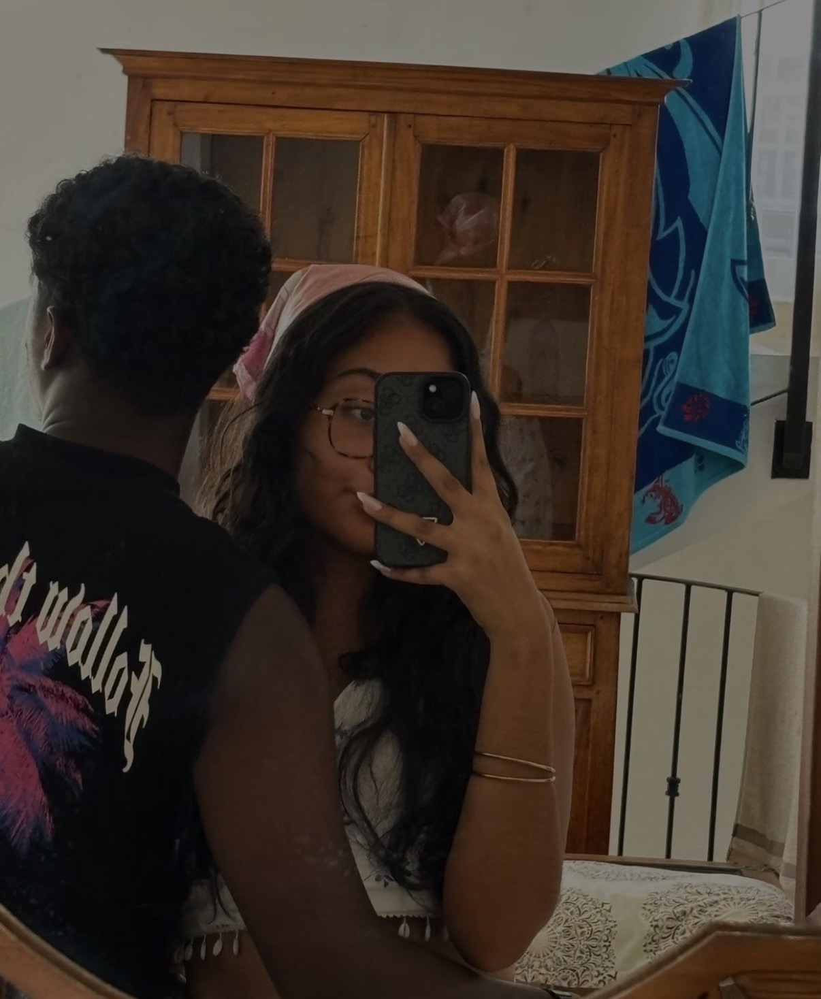

Comme une douce matinée matcha, ton amour apaise mon cœur. Tu es cette chaleur discrète, ce calme élégant, cette beauté simple qui rend chaque instant plus doux. Avec toi, tout devient léger, comme des tulipes dans le vent. Je t'aime, simplement… mais infiniment.